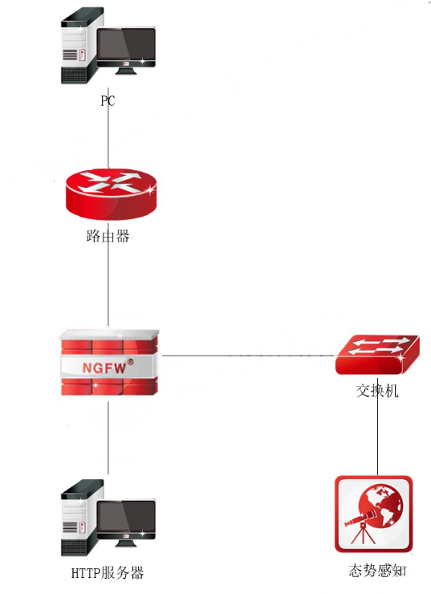
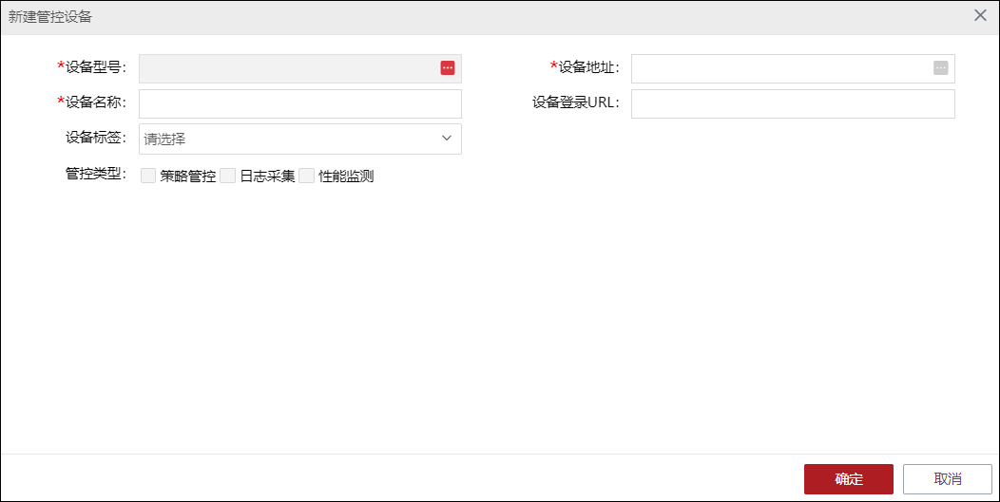
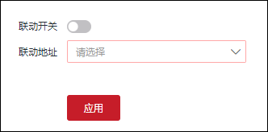

l应用场景
态势感知平台检测防火墙日志信息，针对异常流量对防火墙下发安全策略阻断攻击源。

l配置步骤
ü配置态势感知平台
| 步骤1 | 添加防火墙为管控设备（功能菜单：集中管控 > 设备管控），启用策略管控、日志收集和性能监测管控类型。 |

|
²启用“策略管控”管控类型时，认证信息的SSH账户必须使用防火墙的超级管理员账户“superman”，端口号为“22”，使用其他账户对配置获取等功能受限。 ²启用“日志采集”管控类型时，防火墙设备需要配置态势感知系统为防火墙的日志服务器。 ²启用“性能监控”管控类型时，如果是SNMPv1,SNMPv2，防火墙设备需要配置态势感知系统为其SNMP管理主机；如果是SNMPV3，防火墙设备则需要配置SNMPV3用户。 |

| 步骤2 | 配置响应策略并向防火墙下发响应策略。 |
响应策略种类包括：1）态势感知系统自动生成；2）手动添加（功能菜单：集中管控>策略配置）。
策略下发方式：1）手工即时下发（功能菜单：集中管控>策略配置）；2）根据响应处置预案自动向防火墙下发（功能菜单：响应处置>响应编排）。
ü配置防火墙
| 步骤1 | 配置基础网络（接口地址和路由），确保NGFW与态势感知系统网络连通。 |
| 步骤2 | 开放NGFW与态势感知系统的联动服务，详见 联动服务配置。 |
| 步骤3 | 开启NGFW的联动服务使能开关，配置证书与基础认证，详见 联动服务配置。 |
| 步骤4 | 配置待联动的态势感知系统IP地址，开启态势感知系统的联动开关，详见 安全态势感知。 |

| 步骤5 | （根据态势感知系统的配置决定是否配置）配置态势感知系统为NGFW的日志服务器，可自定义上传到态势感知系统中的日志类型及日志级别，详见 日志管理。 |
| 步骤6 | （根据态势感知系统的配置决定是否配置）配置SNMP信息（添加SNMP管理主机，如果是V1、V2，只需要添加管理主机；如果是V3，则需要添加用户和密码信息，如果是V3私有认证，还需要私有密码），详见 SNMP。 |
Ø服务配置说明
态势感知系统在对接NGFW时，需要在NGFW中开放本地PING、SSH、SNMP等服务，其具体作用如下：
服务名 |
说明 |
备注 |
|---|---|---|
PING |
可查看设备的“在线/离线”状态，一般情况没有正确展示“在线”，则说明该服务未开启。 |
PING/SSH/SNMP服务一般都是开放的，无须再单独配置。 服务条目中开放的区域必须包含NGFW与态势直接相连或与态势可达的区域，控制地址选择态势系统地址(如果多网卡，需要确保网卡地址与设备可达，且在控制地址范围内)或any即可。 |
SSH |
对设备进行管控，进行策略下发、获取设备信息、获取运行配置等操作。 |
|
SNMP |
对设备进行性能监测 |